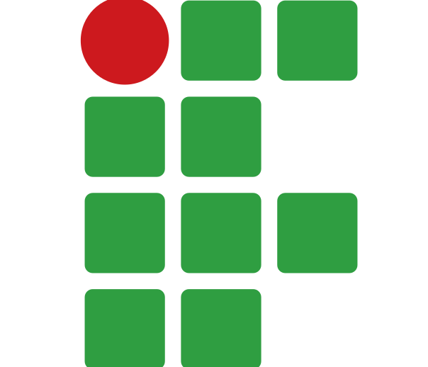

Lucas Amaral dos Santos Barroso Leite
Analista de dados - Fiocruz
amarallucas@id.uff.br
Formação

|
Universidade Federal Fluminense |
Bacharel em Ciência da Computação |
|

|
Instituto Federal Fluminense |
Ensino Médio integrado a técnico Hospedagem |
Sobre mim
Meu nome é Lucas Amaral, 23 anos de idade cursando os últimos períodos de Ciência da Computação na Universidade Federal Fluminense. Já trabalhei com programação Front-End com React Native e com manutenção de aplicação WEB para contratos de crédito imobiliário com a empresa Prognum.
Já trabalhei na incubadora de StartUps da UFF sob orientação do professor Francisco Souza.
Já tive contato com as principais linguagens do mercado como Python, Java, C, Javascript. Já fiz manutenção em bancos da ORACLE, MSSQL e Interbase durante meu período na Prognum(2019-2021).
Também atuei como desenvolvedor React Native para aplicativos móveis no laboratório LMDC da UFF(2020-2021).
Atualmente atuo como Engenheiro de Dados em um projeto da Fiocruz. O trabalho consiste em integrar, limpar, transformar e analisar dados de diversas fontes da Fiocruz elaborado por distintos laboratórios utilizando técnicas ETL com Python, diversas bases de dados, e ferramentas como Knime Analitcs Platform e Apache.
Estou em busca de oportunidades que me permitam usar meus conhecimentos obtidos ao longo da vida acadêmica para solucionar problemas e adquirir experiência profissional. Dessa forma, tenho como objetivo crescer junto com a empresa e agregar valor a mesma.
Gosto de viajar, já estive em muitos lugares da América e Europa o que me levou ao interesse de aprender línguas. Fiz intercâmbio para aprender espanhol na Argentina pelo curso HIBRA em 2017. Me comunico em Inglês muito bem já tendo feito o curso HI. Além disso, fiz dois níveis de Francês no programa da UFF Prolem.